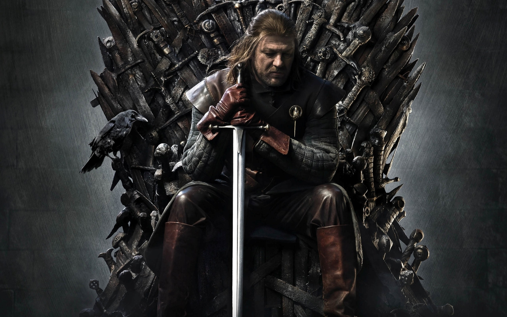
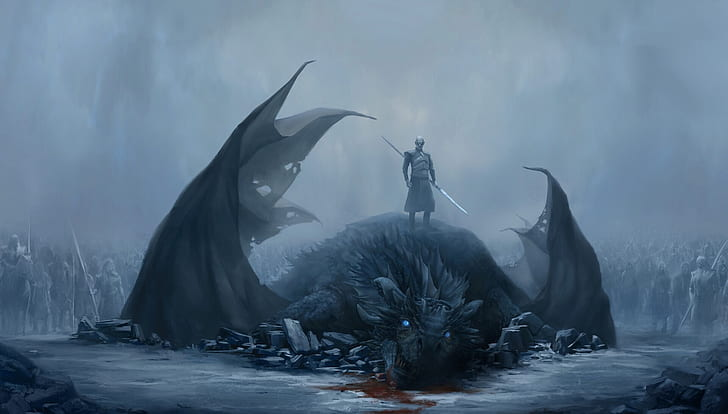
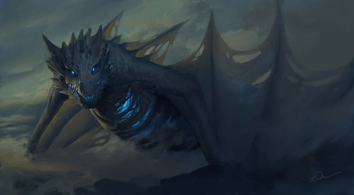
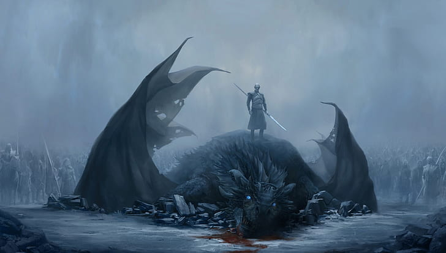
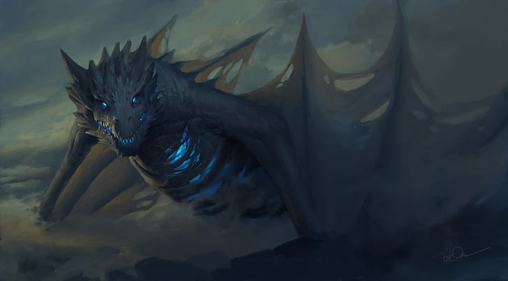
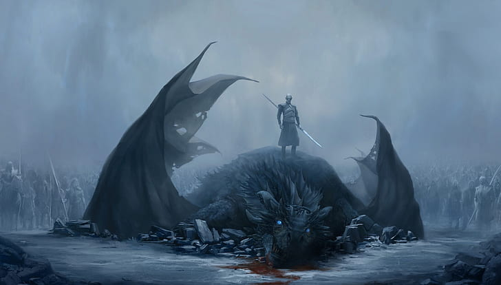
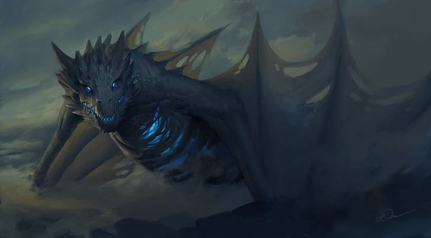

 





A série se passa em Westeros, uma terra reminiscente da Europa Medieval, onde as estações duram por anos ou até mesmo décadas. A história gira em torno de uma batalha entre os Sete Reinos, onde duas famílias dominantes estão lutando pelo controle do Trono de Ferro, cuja posse possivelmente assegurará a sobrevivência durante o inverno que está por vir.